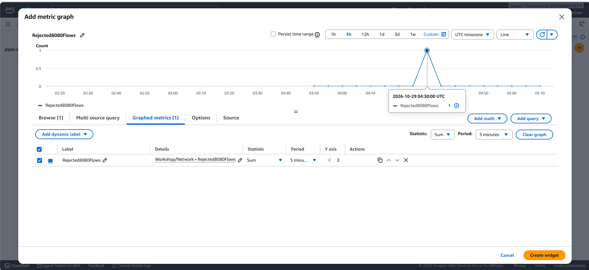
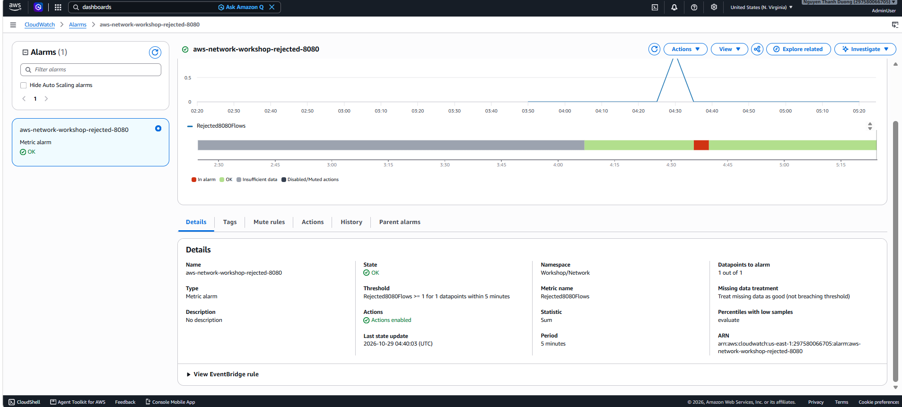
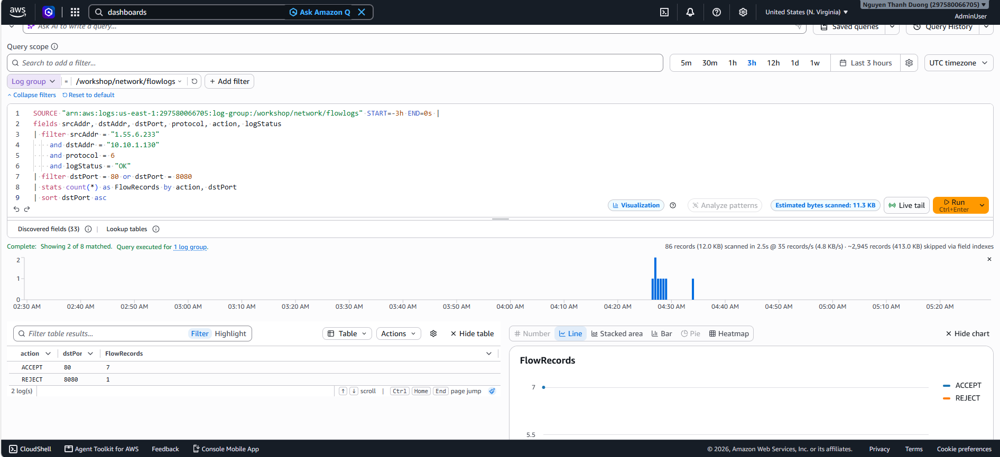
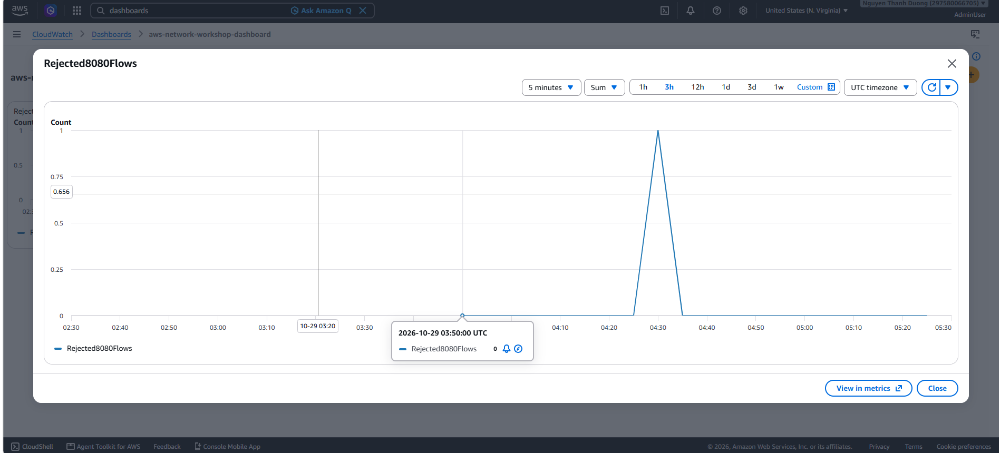

Trong phần này, chúng ta xây dựng CloudWatch dashboard để tập trung thông tin giám sát mạng trên một màn hình.
Dashboard bao gồm ba thành phần:
| Thành phần | Mục đích |
|---|---|
| Biểu đồ Rejected8080Flows | Theo dõi số bản ghi REJECT cổng 8080 theo thời gian |
| Alarm status | Hiển thị trạng thái hiện tại của alarm |
| Bảng ACCEPT/REJECT | Thống kê bản ghi theo hành động và cổng đích |
Ngoài việc theo dõi metric, chúng ta sử dụng CloudWatch Logs Insights để phân tích dữ liệu VPC Flow Logs và đưa kết quả lên dashboard.
Sử dụng Region US East (N. Virginia) — us-east-1 khi chọn metric và log của workshop.
Kiểm tra các tài nguyên đã cấu hình:
| Tài nguyên | Giá trị |
|---|---|
| Log group | /workshop/network/flowlogs |
| Metric namespace | Workshop/Network |
| Metric name | Rejected8080Flows |
| Alarm | aws-network-workshop-rejected-8080 |
Cần có dữ liệu kiểm thử từ phần 5.5 để biểu đồ và bảng truy vấn có dữ liệu hiển thị.
Các địa chỉ sử dụng trong truy vấn mẫu:
| Địa chỉ | Giá trị |
|---|---|
| Public IP máy kiểm thử | 1.55.6.233 |
| Private IPv4 của EC2 | 10.10.1.130 |
Nếu địa chỉ IP đã thay đổi, cập nhật truy vấn bằng các giá trị hiện tại.
aws-network-workshop-dashboard
Sau khi tạo, AWS hiển thị hộp thoại thêm widget để cấu hình nội dung đầu tiên.
Trong hộp thoại Add widget, chọn:
| Mục | Giá trị |
|---|---|
| Data sources types | CloudWatch |
| Data type | Metrics |
| Preferred experience | Metrics Console |
| Widget type | Line |
Bấm Next.
Trong phần chọn metric:
Đặt cấu hình:
| Mục | Giá trị |
|---|---|
| Statistic | Sum |
| Period | 5 minutes |
| Khoảng thời gian | 3h hoặc khoảng chứa lần kiểm thử |
Nếu Statistic đang là Average, đổi sang Sum để biểu đồ thể hiện tổng giá trị trong mỗi khoảng 5 phút và khớp với cấu hình alarm.
Vị trí chụp ảnh 01: Màn hình cấu hình metric, nhìn thấy tên Rejected8080Flows, Statistic Sum và Period 5 minutes.

Bấm Create widget, sau đó chọn Save dashboard.
Tại dashboard vừa tạo:
aws-network-workshop-rejected-8080
Widget hiển thị trạng thái hiện tại của alarm:
| Trạng thái | Ý nghĩa |
|---|---|
| OK | Alarm đang ở trạng thái không vi phạm ngưỡng theo cách đánh giá đã cấu hình |
| ALARM | Alarm đang ở trạng thái cảnh báo |
| INSUFFICIENT_DATA | Alarm chưa có đủ dữ liệu để đánh giá |
Trạng thái có thể thay đổi theo dữ liệu thực tế. Khi chọn một khoảng thời gian cũ trên dashboard, widget trạng thái vẫn thể hiện trạng thái hiện tại của alarm.
Vị trí chụp ảnh 02: Widget hiển thị tên alarm và trạng thái hiện tại trên dashboard.

Trong menu CloudWatch, mở:
Logs → Log Analytics
Log Analytics là giao diện tập hợp các chức năng phân tích log, bao gồm Logs Insights.
Tại Query scope:
/workshop/network/flowlogs
Sử dụng ngôn ngữ Logs Insights QL. Truy vấn mặc định có các lệnh fields, sort và limit trong giao diện này đang sử dụng Logs Insights QL.
Trong giao diện mới, nếu có dòng đầu bắt đầu bằng SOURCE, giữ nguyên dòng đó và thay nội dung từ dòng fields trở xuống bằng:
fields srcAddr, dstAddr, dstPort, protocol, action, logStatus
| filter srcAddr = "1.55.6.233"
and dstAddr = "10.10.1.130"
and protocol = 6
and logStatus = "OK"
| filter dstPort = 80 or dstPort = 8080
| stats count(*) as FlowRecords by action, dstPort
| sort dstPort asc
Truy vấn này:
Bấm Run hoặc Run query.
Bảng kết quả có các cột:
| Cột | Ý nghĩa |
|---|---|
action |
ACCEPT hoặc REJECT |
dstPort |
Cổng đích |
FlowRecords |
Số bản ghi khớp trong khoảng thời gian đã chọn |
Nếu có lưu lượng kiểm thử tương ứng, kết quả có thể bao gồm ACCEPT ở cổng 80 và REJECT ở cổng 8080.
FlowRecords đếm bản ghi Flow Logs, không phải số lần nhấn tải lại trang hay số gói tin.
Nếu kết quả trống, kiểm tra:
Vị trí chụp ảnh 03: Màn hình có log group được chọn, nội dung truy vấn và bảng kết quả.

Sau khi truy vấn chạy thành công:
aws-network-workshop-dashboard
ACCEPT and REJECT by port
Bảng truy vấn thống kê bản ghi trong toàn bộ khoảng thời gian được chọn. Biểu đồ metric thể hiện giá trị theo từng khoảng 5 phút và chỉ theo dõi REJECT cổng 8080.
Mở:
CloudWatch → Dashboards → aws-network-workshop-dashboard
Sắp xếp các thành phần:
Có thể kéo góc widget để thay đổi kích thước và kéo phần tiêu đề để sắp xếp vị trí.
Chọn khoảng thời gian chứa đợt kiểm thử, bấm Refresh, sau đó bấm Save dashboard nếu có thay đổi bố cục.
Kiểm tra dashboard hiển thị đủ:
Vị trí chụp ảnh 04: Toàn bộ dashboard, nhìn thấy tên dashboard và cả ba widget.
